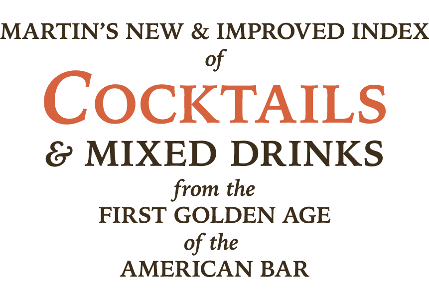
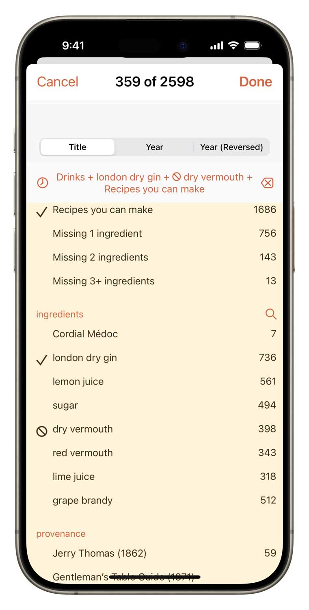
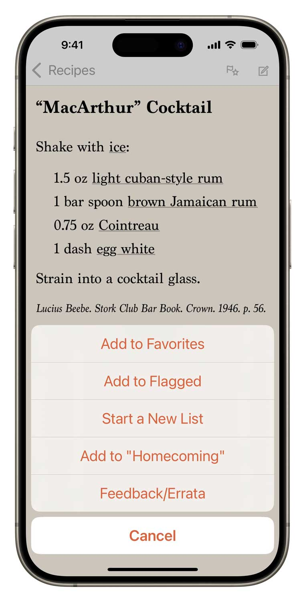

Martin’s Index of Cocktails and Mixed Drinks is a practical reference to the drink recipes of the first “golden age” of the American Bar (1850s until Prohibition) plus the mid-Century decades as a global phenomenon. The ideal companion to David Wondrich’s seminal book Imbibe! and to the amazing vintage cocktail book reproductions from Cocktail Kingdom!
★★★★★ by Christian, Mar 27, 2023
Utterly indispensable tool for the home or even professional bartender. Who can remember which vintage book a recipe is in? Now you don’t need to. The fantastic year scrolling feature which allows you to trace a drink’s evolution is a game changer when it comes to putting tastes of the age into perspective.
The inventory/stock feature allows you to tell at a glance if you can make a recipe. The genius nesting organisation of ingredients even recommends suitable substitutions.
It would be an absolute steal at twice the price.
Your own vintage cocktail book library
Over 2400 fully-curated drink recipes including classics and curiosities including pretty much all the formulas of interest from Jerry Thomas, Leo Engel, George Winter, O. H. Byron, Theodore Proulx, Harry Johnson, “Cocktail Bill” Boothby,William Schmidt, George J. Kappeler, Louis Fouquet, Tim Daly, Stuart Thomas, Charles S. Mahoney, John Applegreen, Jack A. Grohusko, Jacques Straub, Hugo R. Ensslin, Tom Bullock, Robert Vermeire, Harry McElhone, Harry Craddock, Charles Baker, Ted Saucier and others! With full citations!
Easy-to-use power
Search by name or ingredient just like in your address book. Surf through recipes and ingredients by tapping hyperlinks.
More surgical questions are just a few taps away: filter all the recipes by any combination of ingredients and keywords.
Ingredient aware
Our drink recipe apps have the smartest ingredient system. Simply check off what you have and the app will tell you which drinks you can make, including legit substitions.
★★★★★ by Andreadoria56, Jun 11, 2021
This is the one app all you must have if you are interested in both the cultural history and origins of cocktails. It saves you looking up recipes across old cocktail books and allows you to search for single ingredients. Great way to find cocktails to use rare ingredients in.
Simple tools of great utility
Flag recipes you want to try, populate your favorites list, create a new list for planning the drinks for your next party. Add your own notes to any recipe.
Part of a talented family
Martin’s Index of Cocktails inter-operates with its seven sibling recipes apps that you can add at any time.

Set up your free sync account and all these apps can share your ingredient inventory, lists and journal notes. In the same manner, you can have Total Tiki on both your iPhone and iPad, and they’ll stay in sync. You can even access your sync data with a web browser.